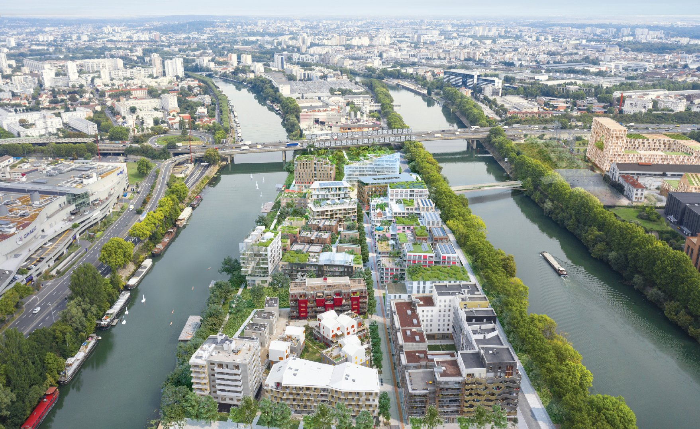
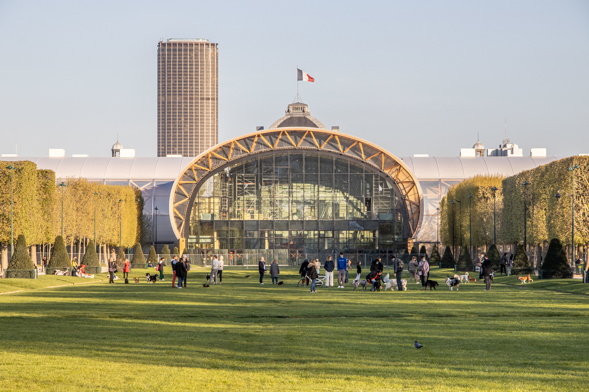
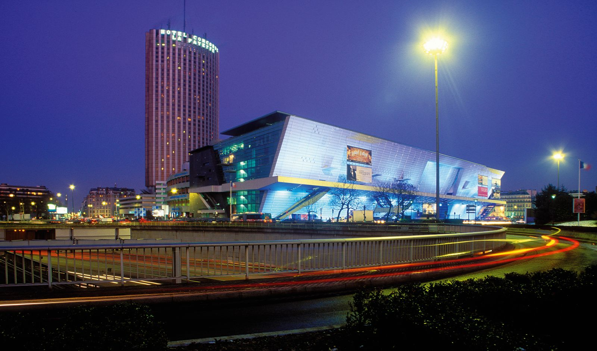
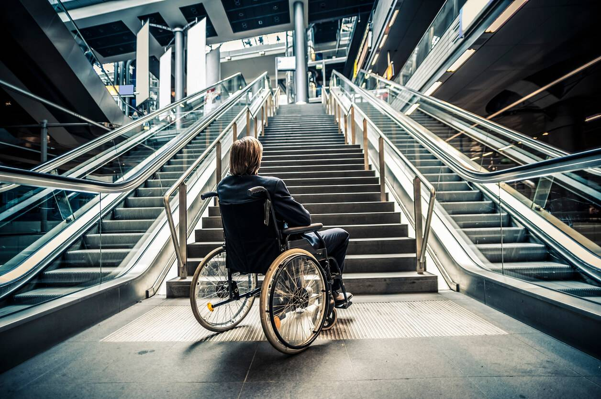

Modernization
As part of the organisation of the Paris 2024 Olympic Games, particular emphasis has been placed on the sustainability and reuse of infrastructure. This strategic approach aims to limit environmental impact while leaving a useful and lasting legacy for the city and its inhabitants. Here are the main sustainable achievements of the Paris 2024 Olympic Games.
Rather than building new facilities, Paris has chosen to modernise a number of existing infrastructures. This approach helps to reduce construction costs while avoiding the obsolescence of buildings after the Olympic Games.
The Stade de France, which has been hosting major competitions for several years, has been adapted to meet the requirements of the Games, while guaranteeing its durability for future events.
The Parc des Expositions at Porte de Versailles and the Palais des Congrès have also benefited from renovations to enable them to continue hosting international events after the Olympic Games.
A notable example is the Stade Pierre-Mauroy in Lille, which, although outside Paris, has been brought up to standard for football competitions, without the need to build new infrastructure.
Transformation of the Village des Athlètes
The Athletes' Village in Saint-Denis is a model of sustainable urban development. Built using environmentally-friendly materials and equipped with innovative technologies, it was designed from the outset to be reused after the Olympic Games.
Once the event is over, the village will be transformed into affordable housing and public spaces for residents.
The project also includes sustainable features such as rainwater management systems, solar panels and green spaces, guaranteeing a positive impact on the quality of life of future residents.
Reusable modular stadiums

To avoid the accumulation of unnecessary structures, Paris has opted for the construction of temporary, modular stadiums. This limits the use of resources, thereby protecting the ecosystem and the planet. These facilities, although not permanent, incorporate a sustainable vision:
For example, the beach volleyball stadium on the Champs de Mars will be dismantled after the Olympic Games. The materials and equipment that were used can be reconditioned or used for other future projects.
This approach ensures efficient management of resources while avoiding the proliferation of non-reusable buildings.
Modernising for a sporting legacy
The Paris 2024 Olympic Games provided an opportunity to bring a number of emblematic infrastructures up to standard so that they could meet the demands of international competitions while forming part of a lasting legacy. Among these infrastructures, the Stade de France has undergone significant renovation. This work has improved facilities for athletes, spectators and broadcasters, while incorporating modern technologies to considerably reduce its energy footprint.
The Palais de Congrès has also been modernised to maintain its position as a key venue for conferences, shows and international events. These improvements include better digital connectivity, compliance with current environmental standards, and the optimisation of spaces to accommodate a greater number of events.
The work on these infrastructures is not limited to meeting the immediate needs of the Olympic Games. They aim to transform these venues into catalysts for sporting, cultural and economic activities. After the Olympic Games, these venues will be able to host : Major sporting competitions, such as national or European championship finals, athletics events, or international football or rugby matches. Major concerts and shows, thanks to modern technical equipment and spaces redesigned to maximise the quality of the experience for artists and audiences alike. Cultural and commercial events, reinforcing their role in attracting tourists and businesses to the Paris Region.
This modernisation ensures that these venues will continue to contribute to the dynamic life of Paris long after the Olympic Games are over, becoming long-lasting, multi-functional infrastructures.
Long-term accessibility and inclusion
Accessibility and inclusion have been at the heart of infrastructure planning for the Paris 2024 Olympic Games, with the aim of creating spaces where all people, regardless of their physical or sensory abilities, can participate fully in this sporting event. The efforts made in this area will have a lasting impact for visitors and users after the Olympic Games.
Improvements to physical infrastructure
Olympic venues have been designed or renovated to include specific facilities such as :
- Access ramps and lifts adapted for wheelchair users.
- Reserved seating in the stands, offering optimum visibility for spectators with reduced mobility, as well as additional seats for their companions.
- Braille signage and tactile floor markings to guide visually impaired people through public spaces.
Technological innovations for inclusion
In addition to physical adaptations, technologies have been put in place to facilitate access to information and enhance the experience of disabled spectators. These initiatives include
- Mobile applications offering real-time audio descriptions for competitions, as well as subtitles for broadcast events.
- Magnetic loops installed in reserved areas to improve hearing for people with hearing aids.
- Digital tools for reserving accessible seats and planning barrier-free routes between venues.
A legacy for all
These investments in accessibility will not disappear after the Games. The facilities will remain in place for future events, creating inclusive spaces that benefit the whole community. What's more, the commitment to universal accessibility will have a ripple effect, encouraging other cities and event organisers to follow suit.
In short, Paris 2024 leaves a legacy that is not only sporting, but also social, by transforming the Olympic venues into models of inclusive and accessible places for generations to come.